Products › BaseNode Packs › Procedural Toolkit › Tutorial: The valley
The valley
A winding valley, six metres long: hillsides cut into terraces, worn by landslides and by rain, rock on the cliffs, broken boulders at their foot, a few trees on the wet ground of the floor. Each step adds one idea, and a few lines, to the step before.

You will learn
- The craft. Shape a terrain in layers, wear it with thermal then hydraulic erosion, read the maps the water leaves behind, break a rock with a Voronoi fracture and grow trees with an L-system.
- The language. A long pipe of
|>lines, one pass of the terrain each;useto bring in a module; a field stored once on the mesh and read back twice, by the material and by the scattering. Each file is the one before plus a few lines: compare two steps to see what changed.
This page goes faster on the basics than Lunar ground, which starts from a flat square: a noise, SetPosition, a material. Read it first if those are new to you.
Before you start
You need Blender 5, the Base Node add-on, and the Procedural Toolkit pack, version 0.13.1 or later: it carries the three modules this tutorial assembles.
The step files below are free to read, copy and change; the modules they use come with the pack, which is paid.
| Module | Kind | What it gives |
|---|---|---|
terrain | geometry | Terrains on a grid of square cells: layered_noise, terrace, thermal_erosion, hydraulic_erosion and its maps, terrain_slope_mask. |
fracture | geometry | voronoi_fracture: a closed mesh broken into convex pieces, the cut faces marked; explode pushes them apart. |
lsystem | geometry | lsystem_tree: branches grown by rewriting their tips, leaves at the last tips; branches_to_tubes gives them a body. |
Every block below is a complete .bn file, its code beside the nodes it builds. Two ways to try a step:
- Drag it. Drag the file icon of its block, or its title, onto empty space in Blender's 3D Viewport, and keep Instantiate the Example: a new object carries
valleyat the 3D cursor. A click on the file icon downloads the file instead. - Paste it. Press the copy button of its block, open a Geometry Node editor, press Ctrl+Shift+V and pick Add as Modifier, on any mesh object: the graph makes its own grid and ignores the mesh it is given.
The pictures are rendered from these exact files by render.py, with the same camera, sun and sky, except where a caption says otherwise.
1. A valley on a grid
Every pass of the terrain module works on a grid of square cells: erosion moves earth and water from a cell to its neighbours, and needs to know how far they are.
Grid gives one: 181 × 121 points over 6 m × 4 m, a point every 3.3 cm both ways.
step1_valley.bn: valley
acrossis the distance to the middle of the valley, in units of 2 m. Its square,sides, is 0 along the middle and 1 two metres away: a U, lifted as a height bySetPosition.middlemoves that middle 40 cm to one side and back asxgoes: a straight trough becomes a valley that winds.- The material is plain clay for now. Colour would only hide the shape, and the shape is what the next three steps change.
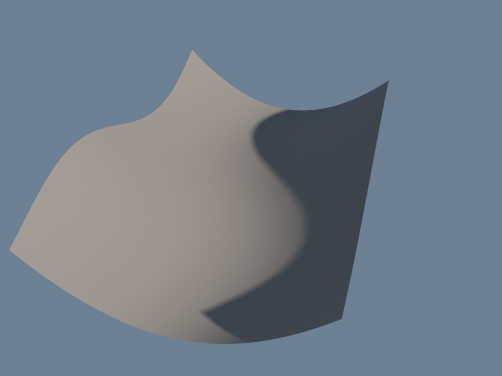
2. Layered noise
use terrain brings in the module. Its layered_noise is the noise of a terrain generator: rolling hills, mixed with ridged mountains by ridges, its space bent by a noise of its own, warp, so that the hills do not line up.
step2_noise.bn: valley
- The noise wanders around 0.5; minus 0.5, it goes as much down as up.
- It is scaled by
0.2 + sides * 1.2: a little on the floor, a lot on the hillsides. A real valley floor is where earth piles up, so it stays gentle. - The module also has
heightfield, a grid and its noise in one node. We keep our own grid instead, because the height adds the noise to the U of step 1.
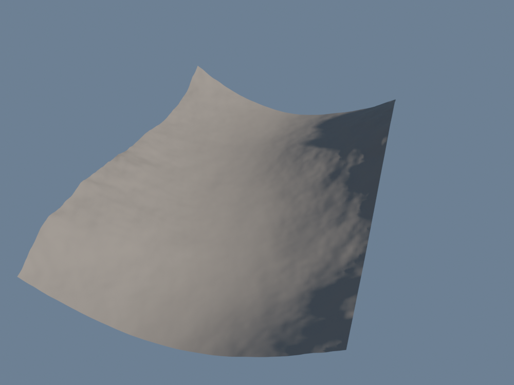
3. Terraces
Rock lies in layers, some hard, some soft. The soft ones wear back and the hard ones stay as ledges: hillsides go up in steps. terrace makes those steps.
step3_terraces.bn: valley
step: 0.14: a level every 14 cm. Withsoftness: 0.3, each terrace is flat over 70 % of its step and rises over the other 30 %: a ledge, then a cliff.selection: Position().z > 0.28leaves the floor as it is. The limit is a level, twice the step: a point just above it is laid down on that level, a point just below keeps its height, so there is no cliff where the terraces stop.- This is a line in the pipe, like every pass to come: each one takes the terrain and passes it on.
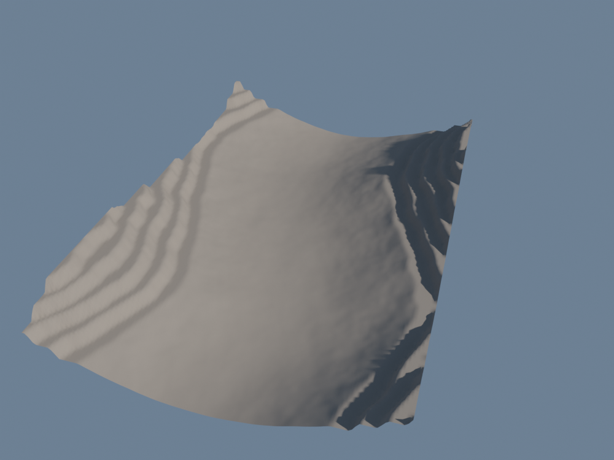
4. Thermal erosion
Fresh cliffs do not stay sharp. Frost and heat crack them, and what breaks off slides down until the slope can hold it.
thermal_erosion does this: wherever the ground is steeper than talus, it moves some of it to the lower neighbours, 20 times over.
step4_thermal.bn: valley
talusis an angle in radians: 0.873 is 50°. Steeper ground slides; gentler ground stays.- Earth is moved, never lost: what a crest loses lands at the foot of its cliff, as a heap of scree.
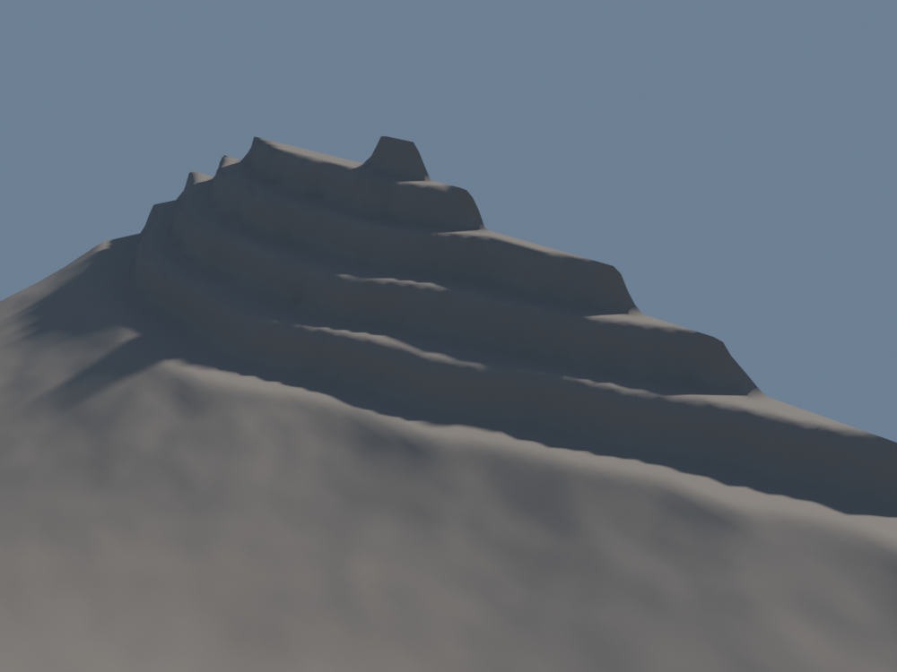
terrace cuts them.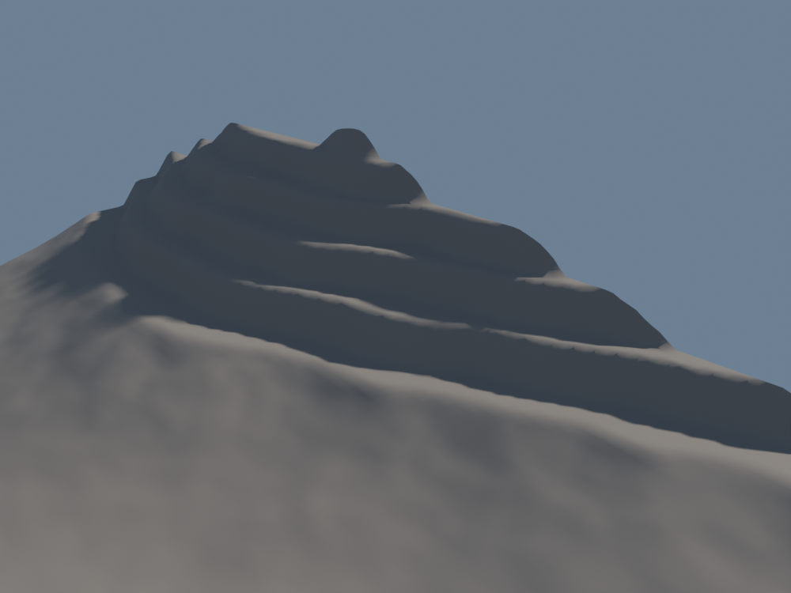
From afar the change is small; it is what makes the next steps look natural. Water finds softer edges to run over, and the cliffs of step 6 are those still steep after the slides.
5. Hydraulic erosion, and its maps
Rain is what carves a valley. hydraulic_erosion rains on every cell for duration seconds of its own: 1.17 here, cut into 96 short steps. The water flows to the eight neighbours of each cell, faster down steeper drops.
Running water picks up earth: more when it is deep, fast and on a slope. When it slows, it drops what it can no longer carry. At the end, what it still carries is laid down where it is.
step5_rain.bn: valley, valley_ground
The erosion also stores what happened on each point of the terrain, as named attributes. Three of them, seen from above:
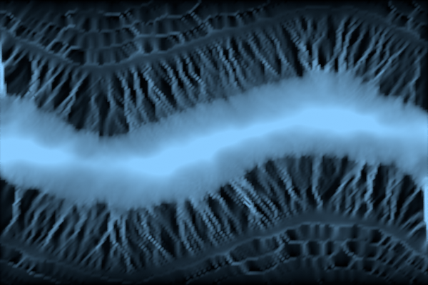
terrain_water: the depth of water left at the end. It gathers on the floor: the border of the grid is a wall, and the water has nowhere else to go.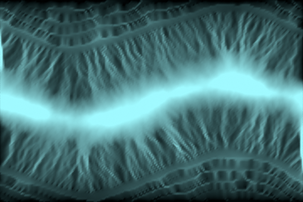
terrain_wetness: the mean depth over the 96 steps. It remembers the rills where water ran, even when it has gone.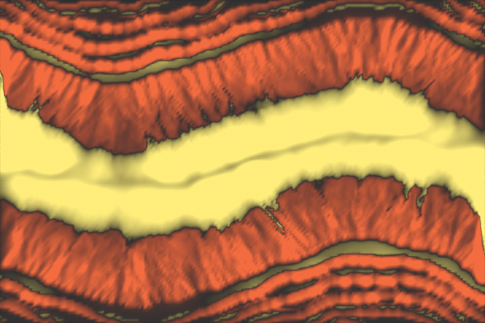
terrain_change: the height dug, in red, or laid down, in yellow. The hillsides lose earth; the floor and the ledges get it.
hydraulic_erosion also lets slopes slide at each step, past 45° (its own talus): the banks the water undercuts fall in.
The material of this step reads two of these maps with an Attribute node, by name: sand where earth was laid down, dark where the ground stayed wet.
The maps above were made the same way: a material that shows one attribute and nothing else, set up by render.py.
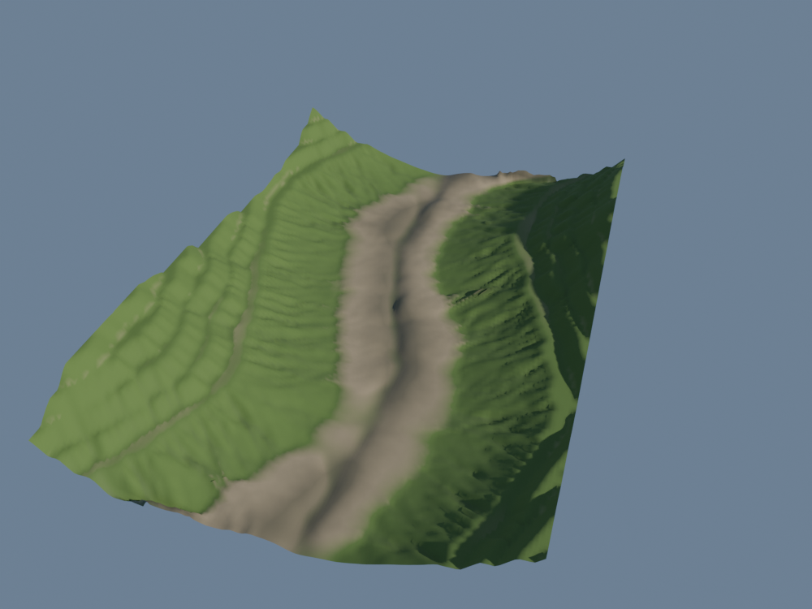
Try: hydraulic_erosion(duration: 2.34), twice as long. The rills cut deeper, the bed widens, and the water washes the terraces away; the erosion runs twice as many steps.
6. Rock on the cliffs
Grass does not hold on a cliff: bare rock shows there. terrain_slope_mask is 1 where the ground is steeper than min_angle and fades out over softness below it.
step6_cliffs.bn: valley, valley_ground
min_angle: 0.75is 43°,softness: 0.2about 11°: the cliffs the thermal erosion left steep.- The mask is stored once on the mesh, as
valley_cliff, withStoreNamedAttribute. The material reads it to paint the rock; step 7 reads it again to find the foot of the cliffs. - In the material, a noise varies the rock between two shades, so that it does not look painted.
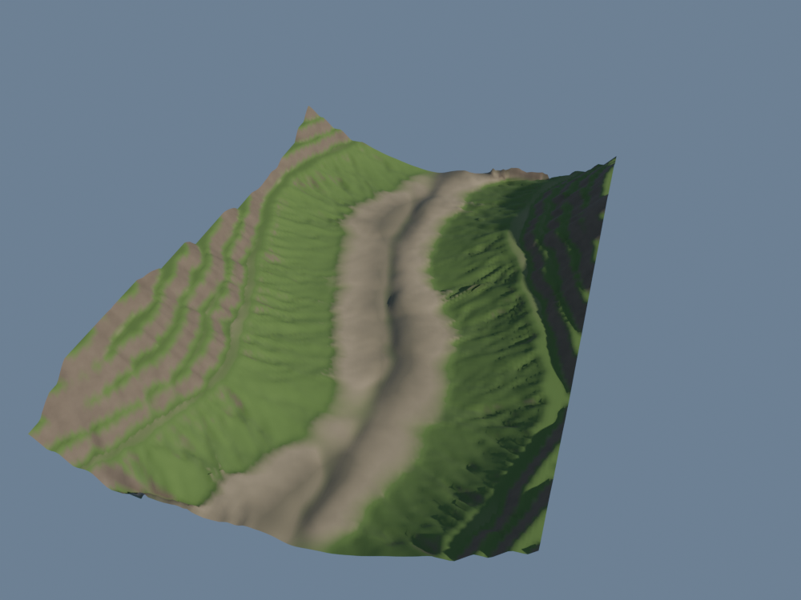
7. Boulders at the foot of the cliffs
Cliffs shed rocks, and rocks break when they land. voronoi_fracture breaks a mesh: it scatters points inside it, and cuts out around each point the part of the mesh that is nearer to it than to any other.
step7_boulders.bn: valley, Stone
- One boulder. An
IcoSphere, made lumpy by a noise along its normals, flattened, and sunk 3 cm so that it sits in the ground. - Broken.
count: 8pieces, agapof 1 cm between them, thenexplodepushes each one 1.5 cm away from the centre. Each cut is a Boolean, so we break one boulder and copy it, instead of breaking every copy. - Where.
BlurAttributespreadsvalley_cliffover six rings of neighbours: it is above 0.2 next to a cliff. With a secondterrain_slope_maskfor flat ground, that is where a falling rock stops: at the foot of a cliff, sometimes on the ledge above it. - Copies.
InstanceOnPointssets the broken boulder on each point, turned and sized at random.
voronoi_fracture marks the faces its cuts made with fracture_inside. The material Stone reads it: dark weathered skin outside, fresh pale stone in the cracks.
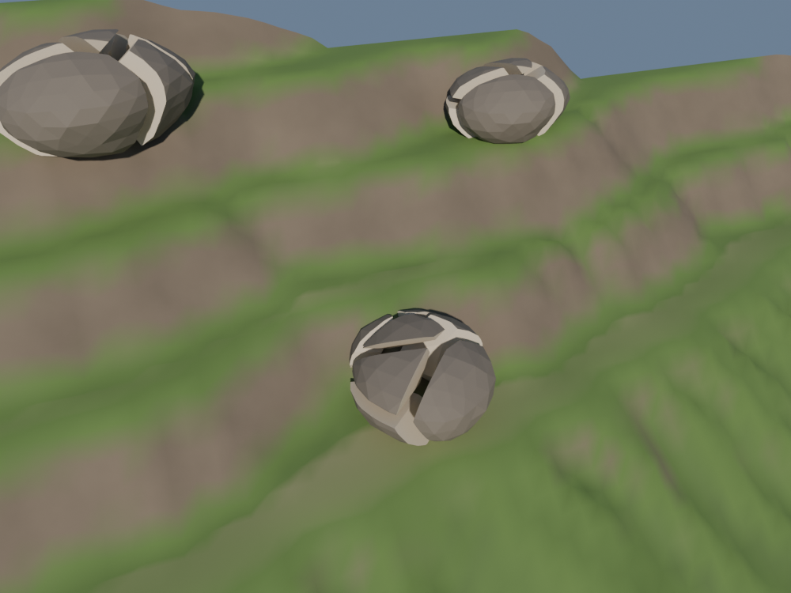
8. Trees on the wet flats
Last, a few trees, where trees grow: on flat ground that the water keeps wet.
lsystem_tree grows one by rewriting: a trunk; then each tip goes on, and opens three side branches, shorter and tilted; then again, four times.
step8_trees.bn: valley
- Four children per tip, four rewrites: 341 segments and 256 tips.
decay: 0.68shortens each level,angle: 0.6(34°) tilts the side branches,tropism: 0.15bends them up a little,jittermakes them uneven. tree.branchesare curves:branches_to_tubesgives them a body of their radius.tree.leavesare points at the last tips: a small ball of leaves on each one.- The spots read the maps of step 5 again: slope under 14°, a mean wetness over 6 mm, and less than 2 cm of water still standing, so that no tree stands in the river.
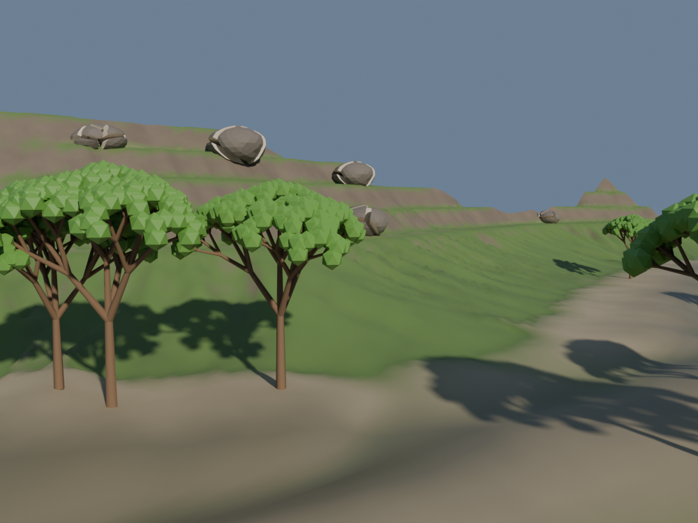
The knobs
Every pass has its inputs, on its node in the Geometry Node editor. A few worth turning:
| Where | Input | What it does |
|---|---|---|
valley | seed | Another valley: the noise, the boulders and the trees change together. |
layered_noise | scale, ridges, warp | How many hills across, how sharp their crests, how twisted. |
terrace | step, softness | How high each terrace, how steep its cliff: 1 smooths them away. |
thermal_erosion | talus, iterations | The steepest slope that holds, and how long the ground has to slide. |
hydraulic_erosion | duration, rain, capacity | How long it rains, how hard, how much earth the water can carry. |
terrain_slope_mask | min_angle | From which slope the rock shows, and the boulders fall. |
voronoi_fracture | count, gap | How many pieces, how wide the cracks. |
lsystem_tree | iterations, branches, angle, decay | How many levels of branches, how many per tip, how open, how fast they shorten. |
Try: on step 8, set seed of valley to 7, then set softness of terrace to 1: no more terraces, and most of the rock goes with them.
Mind the size of the grid: erosion works on every point, at every step. 181 × 121 points build in a few seconds. Twice as many along each side are four times as many points, and hydraulic_erosion cuts the same duration into twice as many steps, to erode about as much: it takes four to eight times as long.
Take it to Blender
The finished valley, in one file. Drag the card onto empty space in Blender's 3D Viewport and keep Instantiate the Example: a new object carries valley. A click on the card downloads the file.
The steps before it, to start again from any of them:
The files, with the script that renders this page's pictures, are in examples/tutorials/valley/.